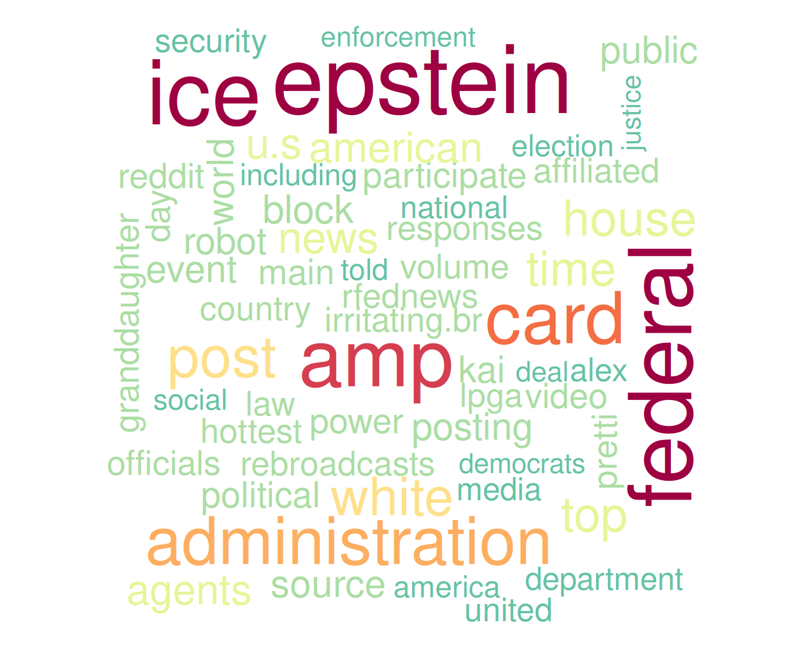
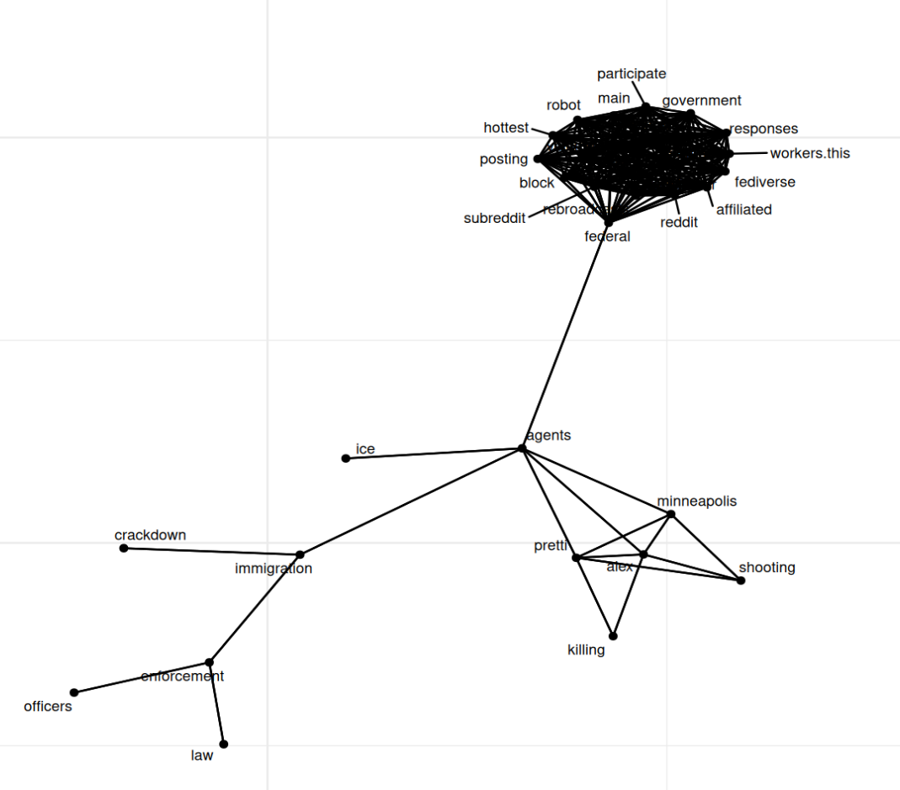
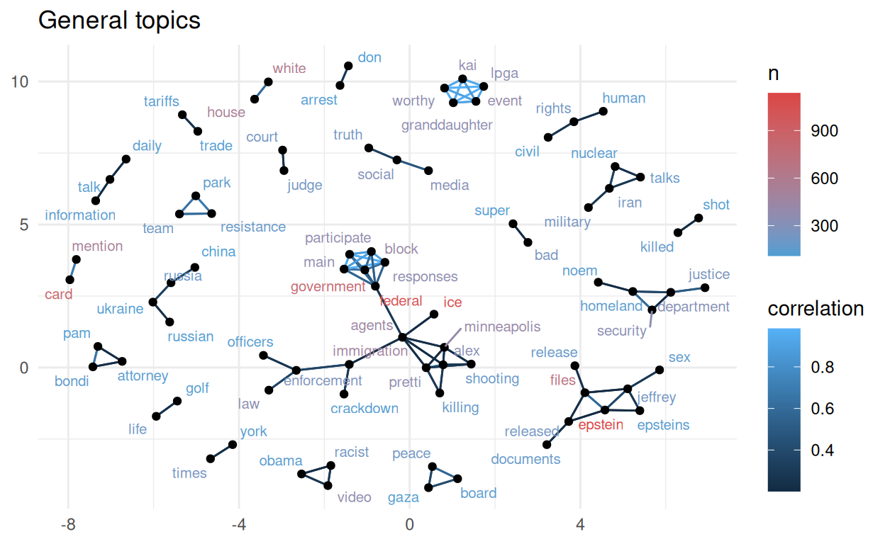
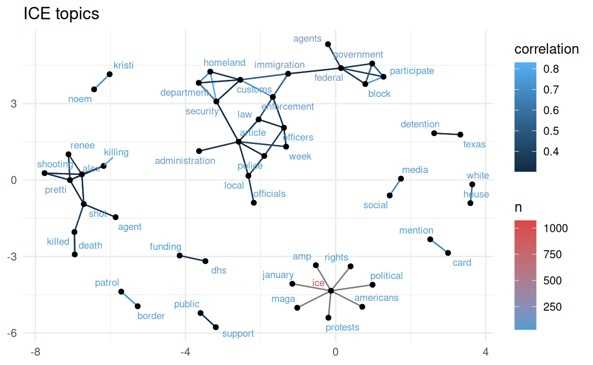
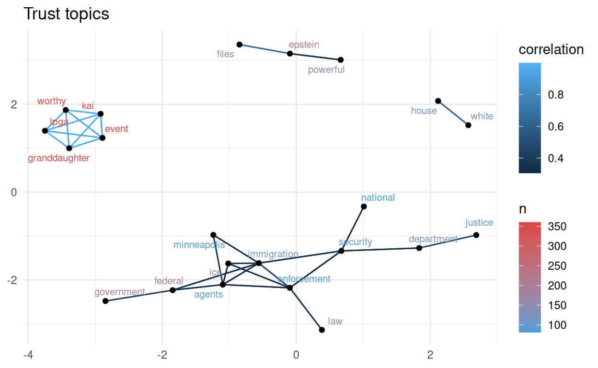
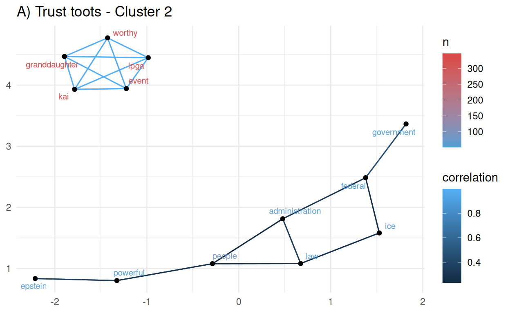
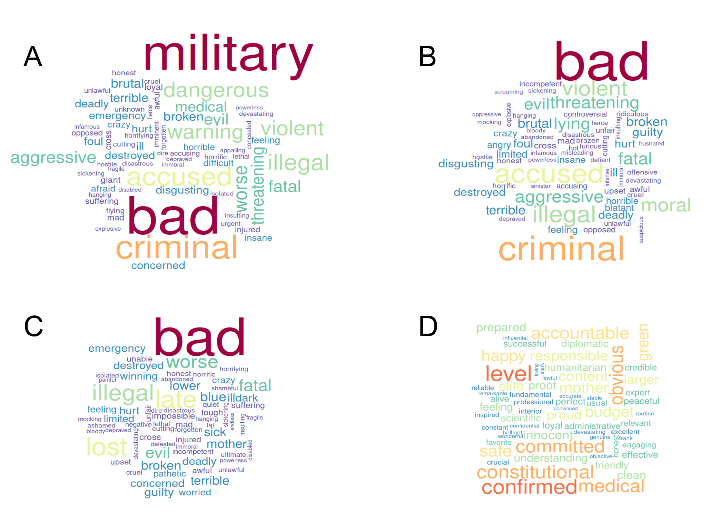

💬 ¡Cuéntamelo todo…. pero con mates!
Si una imagen vale más que mil palabras… ¿cuánto vale una imagen hecha de palabras?… La Ciencia de Datos nos permite realizar estudios sociales partiendo de grandes volúmenes de textos. Al analizar miles de publicaciones en redes sociales, podemos identificar los temas de discusión asociados a un tópico concreto, así como las respuestas emocionales asociadas. A esto llamamos minería de textos.
La minería de textos (text mining) es una rama de la Ciencia de Datos que nos ayuda a extraer información e identificar patrones en grandes volúmenes de texto no estructurado; es decir, texto que no sigue un formato predefinido, correos electrónicos, redes sociales, artículos, chats o documentos PDF. Esta disciplina combina técnicas de lingüística, estadística y Aprendizaje Automático para analizar cientos o miles de documentos, identificar tendencias, clasificar contenido y descubrir relaciones ocultas entre conceptos, temas y subtemas de discusión.
Al extraer patrones en el lenguaje que reflejan actitudes, emociones y comportamientos colectivos, la minería de datos nos ofrece una visión cuantitativa y cualitativa de eventos, procesos y movimientos sociales, ayudándonos a comprender dinámicas complejas, movimientos políticos, cambios de opinión y fenómenos globales de forma rápida, económica y a escala masiva.
En nuestro mundo moderno, en el que los seres humanos dejamos registro de nuestras actividades y sentimientos en la red y volcamos todo nuestro conocimiento en Internet, la Minería de Textos se ha convertido en una herramienta invaluable para la disciplinas como la sociología y la psicología, la antropología y ciencias políticas, pues nos ayuda a mejorar la comprensión del comportamiento humano dentro de distintos contextos y en tiempo real. En este contexto, las redes sociales se han convertido en una fuente de información increíblemente valiosa que nos permite conducir análisis cualitativos y cuantitativos a gran escala.
El mastodonte de las redes sociales
Mastodon es una red social descentralizada y de código abierto, similar a Twitter (ahora X) o Facebook, pero que no pertenece a ninguna compañía o corporación.
Mastodon funciona a través de servidores independientes (instancias) que se comunican entre sí. Cada instancia funciona como una comunidad virtual independiente con libertad para establecer sus propias reglas de moderación de contenido. A la fecha de publicación de este post existen 9,858 instancias de Mastodon con casi 10 millones de usuarios registrados.
Al ser una red social descentralizada, Mastodon prioriza la privacidad, el control del usuario y la libertad de moderación dentro cada comunidad virtual. A diferencia de redes sociales corporativas, Mastodon no aplica algoritmos publicitarios, filtrado de contenido, ni censura centralizada. Estas propiedades hacen de Mastodon una importante fuente de información sin sesgos.
El señor de pelo color zanahoria y extraño copete…
Donald Trump es una figura pública controvertida. Su segunda presidencia en los Estados Unidos comenzó el 20 de enero de 2025 cuando asumió su cargo como el 47º presidente. Su mandato se ha caracterizado por decisiones políticas inesperadas y la salida a la luz documentos que revelan actos de corrupción gubernamental a una escala insospechada.
En este post hemos decidido experimentar un poco utilizando a “Donald Trump” como tema de discusión principal, en un interesante ejercicio de minería de textos con Mastodon.
🦣 Conversando con el mastodonte
La librería rtoot de R nos permite conectarnos a Mastodon y descargar a nuestro entorno de programación las publicaciones (llamadas toots) públicas más recientes, o bien aquellas que hayan sido etiquetadas utilizando algún hashtag específico.
Para este post utilizamos rtooth para descargar 20,000 publicaciones etiquetadas con el hashtag #trump.
Como Mastodon es una red descentralizada, antes de descargar nada debemos elegir una instancia desde la cual descargaremos las publicaciones. En este caso hemos elegido la instancia mastodon.social, ya que es el servidor más grande de la red, con más de 300,000 usuarios activos y más de 1.5 millones de cuentas registradas.
🔍 El objetivo de este análisis será identificar los temas de discusión relacionados con Donald Trump, descubrir aspectos emocionales asociados a ellos, y ver cómo evolucionan en el tiempo.
Limpieza de los datos
Antes de poder comenzar con el análisis de temas de discusión, filtramos los toots para quedarnos únicamente con aquellos cuyo idioma de publicación fuera el inglés, lo que redujo el número de toots a 15,500. La fecha del primer toot recuperado, e incluido en el análisis, fue el 25 de enero de 2026, publicado a las 17:51 (hora de Europa Central) y el último el 19 de febrero a las 12:14.
La extensión máxima de los toots fue de 1328 palabras, la mínima de 2, con una media de 60.77 y desviación estándar de 54.55.
En una estrategia báscia de minería de textos, la materia prima del análisis son las palabras aisladas, llamadas tokens, que componen un documento. Sin embargo, no nos interesan TODAS las palabras, sino únicamente aquellas que contienen significado. Por ello, todos los determinantes, pronombres, conjunciones, preposiciones, nexos, números, signos de puntuación y caracteres distintos de letras deben ser eliminados del texto. En la minería de textos, estas palabras sin significado se denominan stop words.
En el caso de Mastodon, los enlaces a páginas web o a otras publicaciones generan códigos HTLM que también deben ser eliminados.
Tras eliminar las stop words y códigos HTML, las palabras de un texto son separadas una a una, dando como resultado una tabla de palabras (tokens) con el identificador del toot (ID toot) asociado a cada una (Tabla 1).
Tabla 1. Estructura de una tabla de tokens | |
|---|---|
ID toot | Palabra |
116097288515549378 | lex |
116097288515549378 | classhashtag |
116097288515549378 | relnofollow |
116097288515549378 | noopener |
116097288515549378 | href |
116097288515549378 | targetblankprincea |
116097288515549378 | classhashtag |
116097288515549378 | relnofollow |
116097288515549378 | noopener |
116097288515549378 | href |
La Tabla 1 muestra las 10 primeras líneas de la tabla de datos que contiene los tokens del primer toot de nuestro conjunto. Un vistazo a la tabla nos revela al existencia de “palabras” que carecen por de significado. Estas “palabras” son etiquetas HTML utilizadas por Mastodon para distintos fines, y también deben ser eliminadas.
Para poder identificar estas etiquetas, haremos una lista de las palabras que aparecen con mayor frecuencia en todas las publicaciones (Tabla 2).
Tabla 2. Lista de las 20 palabras más comunes | ||
|---|---|---|
Posición | Palabra | n |
1 | href | 109,325 |
2 | noopener | 86,499 |
3 | relnofollow | 86,499 |
4 | classmention | 83,551 |
5 | hashtag | 83,469 |
6 | classinvisible | 11,319 |
7 | classhashtag | 10,517 |
8 | targetblankspantrumpspana | 7,649 |
9 | trump | 6,395 |
10 | targetblankspan | 5,963 |
11 | translateno | 5,783 |
12 | targetblank | 5,145 |
13 | translatenospan | 4,682 |
14 | reltagspantrumpspana | 3,270 |
15 | targetblanktrumpabrbra | 2,778 |
16 | trumps | 1,970 |
17 | epstein | 1,935 |
18 | donald | 1,909 |
19 | ice | 1,556 |
20 | amp | 1,511 |
La Tabla 2 nos muestra que las etiquetas HTML de Mastodon son los tokens que aparecen con mayor frecuencia en las publicaciones. A partir de la posición número 16, comienzan a aparecer palabras que sí parecen guardar relación con Donald Trump.
Para cada publicación, eliminamos los tokens correspondientes a las etiquetas HTML de la Tabla 2, así como las palabras “donald”, “trump” y “president”, puesto que nuestro conjunto de datos ya fue creado con el hashtag #trump como tema principal.
A través de múltiples iteraciones identificamos otras “palabras” comunes que en realidad no guardan significado y las eliminamos de las lista de tokens de cada publicación (consultar el script de programación para ver la lista completa en el repositorio de La Casa de Datos en Github).
Tras esta limpieza exhaustiva, y tras eliminar los tokens repetidos dentro de cada publicación, el número total de tokens fue de 265977, con un total de 47279 palabras únicas. El número máximo de tokens por toot fue de 598 y el mínimo de 1. La media de tokens por toot fue de 17.7, con una desviación estándar de 24.21.
🖼️ Una imagen vale más que mil palabras…
Las nubes de palabras son una herramienta clásica de la minería de textos; nos ayudan a visualizar la frecuencia con la que aparece una palabra en un texto. Cuanto más común es una palabra en un texto más grande es su tamaño dentro en la nube. También podemos usar una escala de color ligada a la frecuencia. La Figura 1 muestra la nube de palabras asociadas a nuestro conjunto de toots.

Figura 1. Nube de palabras asociadas a Donald Trump, en toots de Mastodon (mastodon.social) publicados entre el 25 de enero y el 19 de febrero de 2026. El tamaño de las palabras se corresponde con la frecuencia con la que aparecen en el conjunto de publicaciones.
En la Figura 1 vemos que algunas de las palabras que aparecen con mayor frecuencia son “epstien” e “ice”, seguidas de “amp” y “card”. A primera vista, el resto de palabras podrían asociarse simplemente a la administración del gobierno estadounidense y a temas de carácter general.
¿De qué va todo esto?
A la fecha de la publicación de este post, el nombre de Epstein ha aparecido incontables ocasiones en los medios de comunicación tradicionales y en las redes sociales, nombrando a un criminal con lazos con altos cargos del gobierno de Estados Unidos y otros países, que manejaba una red chantaje basada en la prostitución y abuso de niños y adolescentes. Búsquedas simples en Internet usando los términos trump + ice, trump + amp y trump + card, nos revelan que “ice” se refiere a la agencia americana de aduanas e inmigración (Immigration and Customs Enforcement, ICE). “AMP” podría referirse a la asociación de Musulmanes Americanos por Palestina (American Muslims for Palestine, AMP). Card podría hacer referencia a la llamada “Trump Gold Card”, que es una forma acelerada de obtener la residencia americana de forma acelerada tras una contribución de 1 millón de dólares.
Aunque nos permiten tener una visión muy general de los temas contenidos en un conjunto de publicaciones, las nubes de palabras por si solas no son muy eficientes para ayudarnos a identificar temas de discusión específicos. Esto se ve reflejado en la Figura 1, en la que la mayoría de las palabras podrían asociarse simplemente a temas administrativos del gobierno federal estadounidense.
🕸 Una de las debilidades de las nubes de palabras es que no muestran la relación entre las palabras. Por ello, recurrimos al análisis de redes para identificar temas de discusión con mayor precisión.
🔬 Identificación de temas de discusión a través del análisis de redes
La librería igraph de R es una herramienta muy poderosa que nos permite identificar temas de discusión a través de la visualización de redes de palabras (grafos). La red se construye a partir de los niveles de correlación de los tokens dentro de cada documento (en nuestro caso, cada toot): las palabras que aparecen juntas en muchos documentos tendrán un mayor grado de correlación que las palabras que aparecen juntas solo en unos cuantos de ellos.
La Figura 2 muestra una primera aproximación a la identificación de temas de discusión por análisis de redes, utilizando un grado de correlación de 0.2 y un mínimo de repeticiones de 100. Es decir, ajustamos nuestros parámetros para identificar palabras que aparezcan en al menos 100 toots,con un nivel de correlación de 0.2.


Figura 2. Identificación de temas de discusión por redes. Cada punto de la red corresponde a una palabra (token). La distancia entre puntos (en unidades arbitrarias) se corresponde con el grado de correlación entre palabras o grupos de palabras. El panel inferior corresponde a una ampliación de la nube de puntos que aparece en el centro de la imagen del panel superior.
En la Figura 2 comienzan a aparecer conjuntos de palabras que parecen apuntar a temas de discusión específicos. En la parte superior izquierda del grafo vemos las palabras “epstein” y “files” asociadas con otras palabras como “sex” y “child”.
Por mencionar otros grupos de palabras independientes, vemos también “iran”, “nuclear”, “talks” y “miliary”; así como “gaza”, “board” y “peace” en otro conjunto.
Vemos además una gran conjunto central que podrían estar relacionadas con agencias de noticias, otras redes sociales o encabezados sensacionalistas. Dentro de este conjunto encontramos palabras como “hottest”, “reddit”, “fediverse”, “rebreadcast”, etc. Para refinar nuestro análisis de redes eliminamos las palabras de esta nube de puntos, y aumentamos el número mínimo de repeticiones a 110 (Figura 3).

Figura 3. Identificación de temas de discusión por redes, tras la eliminación de palabras irrelevantes. Cada punto corresponde a una palabra (token). La distancia entre puntos (en unidades arbitrarias) se corresponde con el grado de correlación entre palabras o grupos de palabras. El color de las palabras se corresnponde con el número de veces que aparecen en el conjunto de toots. El color de las líneas se corresponde con el grado de correlación entre las palabras.
Tras eliminar las palabras irrelevantes y aumentar ligeramente el número mínimo de repeticiones emergen grupos de palabras que a estructuran claramente algunos temas de discusión.
Tomando como referencia el número de publicaciones en el que aparecen las palabras, destacan las redes de palabras relacionadas con Epstein (en color rojo) y con la agencia americana de aduanas e inmigración ICE (en color rojo) que mencionamos arriba. En este último conjunto de palabras aparecen las palabras “alex”, “pretti”, “shooting” y “killing”, que se relacionan con el asesinato de Alex Pretti por parte de agentes de ICE en Minnesota, ocurrido el 24 de enero de 2026.
A nivel de correlación, destaca el grupo de palabras que contiene “kai”, “granddaugther”, “worthy”, “lpga” y “event”. La palabra “lpga” corresponde a la asociación femenina de golf profesional (Ladies Professional Golf Association, LPGA) dentro de la que participa la nieta de Donald Trump llamada Kai.
Otros conjuntos de palabras señalan a Rusia, China y Ucrania; la junta de paz de Gaza (Gaza Peace Board); asuntos militares, nucleares e Irán; el departamento de justicia y el departamento de seguridad nacional (Homeland Security); entre otros. Además, Algunos pares de palabras aislados, como “tarifs” y “trade”, o “white” y “house”, identifican otros temas de discusión.
👓 El análisis de redes nos ha permitido identificar claramente distintos temas de discusión; mismos que pudimos validar con búsquedas sencillas de información en Internet.
¿Pero podemos ir más allá?… ¿Podemos identificar subtemas contenidos dentro de los temas principales?
El caso de Jeffrey Epstein
Ya hemos visto que la palabra Epstein no solo es la más común en nuestro conjunto de toots, sino que además, el análisis de redes ha señalado a esta palabra como un nodo importante de un tema de discusión.
Para identificar subtemas relacionados con Jeffrey Epstein, filtramos todos aquellos toots que contienen la palabra Epstein (1136 toots) y repetimos el análisis de redes (Figura 4). A través de ensayo y error, ajustamos los parámetros del grafo a un mínimo de 30 repeticiones, y un nivel de correlación de 0.27, para encontrar un balance entre el número de nodos el número de conexiones entre ellos.

Figura 4. Identificación de temas de discusión (topics) por análisis de redes, utilizando únicamente los toots que contienen la palabra “epstein”. Cada punto corresponde a una palabra (token). La distancia entre puntos (en unidades arbitrarias) se corresponde con el grado de correlación entre palabras o grupos de palabras. El color de las palabras corresponde al número de veces que aparecen en el conjunto de toots. El color de las líneas se corresponde con el grado de correlación entre las palabras.
En la Figura 4 podemos identificar claramente algunos subtemas de discusión. En un conjunto de puntos aparece el nombre de Epstein relacionado con la Casa Blanca y el abuso sexual de mujeres y niños. Dentro de otro conjunto encontramos el nombre de la Fiscal General Pam Bondi quien lleva el caso Epstein y que, a través del departamento de justicia de Estados Unidos, sacó a la luz millones de documentos de la red de tráfico sexual y pedofilia; documentos que revelan lazos entre el fallecido Jeffrery Epstein y personalidades como Elon Musk, el secretario de comercio estadounidense Howard Lutnick y otras personalidades internacionales.
El asesinato de Alex Pretti por agentes de ICE
Hemos visto que la palabra “ICE” (la agencia americana de aduanas e inmigración) tiene cierto protagonismo en nuestra nube de palabras (Figura 1), siendo además la segunda más común en el conjunto de publicaciones, con 1073 toots. Al igual que la palabra “Epstein”, “ICE” aparece en un conjunto de palabras independiente en nuestro análisis de redes (Figura 3).
Para identificar subtemas relacionados con la agencia ICE, filtramos aquellos toots que contienen esta palabra y repetimos el análisis de redes (Figura 5). A través de ensayo y error, ajustamos los parámetros del grafo a un mínimo de 30 repeticiones, y un nivel de correlación de 0.3, para encontrar un balance entre el número de nodos y la claridad de las relaciones entre ellos.

Figura 5. Identificación de temas de discusión (topics) por análisis de redes, utilizando únicamente los toots que contienen la palabra “ICE” (las siglas de la agencia americana de aduanas e inmigración). Cada punto corresponde a una palabra. La distancia entre puntos (en unidades arbitrarias) se corresponde con el grado de correlación entre palabras o grupos de palabras. El color de las palabras corresponde al número de veces que aparecen en el conjunto de toots. El color de las líneas se corresponde con el grado de correlación entre las palabras.
En la Figura 5 podemos identificar claramente algunos subtemas relacionados con la agencia ICE. Junto al nombre de Alex Pretti (a la izquierda del gráfico) aparece el nombre de Renee (Good), otra ciudadana de Minnesota asesinada por agentes de ICE apenas dos semana antes que Alex Pretti. En la Figura 5 podemos relacionar a la agencia ICE con protestas, derechos políticos y “maga”. MAGA (Make America Great Again) es un movimiento nativista ligado al Partido Republicano americano que ha sido acusado de homofobia, racismo y sexismo, que ha salido en defensa de las acciones de los agentes de ICE, a pesar de la evidencia en vídeo del uso de violencia letal no justificada por su parte.
El nombre Kristi Noem, la octava secretaria del Departamento de Seguridad Nacional, el organismo encargado de supervisar a la agencia ICE, también aparece como un tema de discusión separado.
Otros pares de palabras aislados, apuntan al centro de detención de la agencia ICE en Texas (detention-texas), a la financiación del Departamento de Seguridad nacional de Estados unidos (funding-dhs) y la patrulla fronteriza (patrol-border).
⚗️ El análisis de redes nos ha permitido identificar claramente temas y subtemas de discusión asociados a dos de las palabras más comunes dentro de nuestro conjunto de 20,000 toots relacionados con Donald Trump… ¡Estupendo! Pero… ¿Podemos explorar la cara emocional de estos toots? ¿Tal vez incluso las facetas emocionales de cada tema?…
💖 Análisis de sentimientos
Para poder explorar las emociones asociadas a los temas de discusión que hemos identificado, utilizamos los llamados “diccionarios de sentimientos”: tablas de palabras a las que se les ha asociado un aspecto emocional. En un diccionario de sentimientos básico, cada palabra del diccionario está etiquetada como “positiva” o “negativa”; por ejemplo, alimento - positivo, hambre - negativo; hermoso - positivo, feo - negativo. En diccionarios más complejos, además de la etiqueta “positivo” o “negativo”, cada palabra tiene asociada una emoción, como confianza, dicha, asco o ira.
Para el análisis de este post trabajamos con dos diccionarios de setimientos para la lengua inglesa:
El diccionario Bing, que categoriza las palabras de forma binaria en positivas y negativas, con un total de 6783 palabras etiquetadas.
El diccionario NRC, que además de clasificar las palabras como positivas o negativas, las asocia con ocho emociones básicas según Plutchik (ira, miedo, anticipación, confianza, sorpresa, tristeza, alegría y asco), con un total de 6453 palabras etiquetadas.
Ambos diccionarios de sentimientos incluyen sustantivos, adjetivos, verbos y adverbios. Para explorar mejor las emociones asociadas al conjunto te toots, aplicamos un filtro ara recuperar únicamente aquellos tokens que corresponden a adjetivos, ya que esta categoría de palabras tiene mayor contenido emocional que otras categorías de palabras (al menos en la lengua inglesa y posiblemente en Español también).
La lista de adjetivos que usamos para recuperar específicamente los adjetivos contenidos en nuestro conjunto de toots contiene un total de 4840 palabras. Tras aplicar este filtro, obtuvimos un total de 34,264 tokens, provenientes de 10,997 toots.
Polos opuestos
Tras etiquetar cada uno de los adjetivos de nuestros toots como “positivos” o “negativos”, según el diccionario Bing, creamos dos nubes de palabras. Una partiendo de los adjetivos “positivos” (4393 tokens, Figura 6) y otra de los “negativos” (6492 tokens, Figura 7).

Figura 6. Nube de adjetivos “positivos” en publicaciones de Mastodon (mastodon.social) comprendidas entre el 25 de enero y el 19 de febrero de 2026, relacionadas con Donald Trump. El tamaño de las palabras se corresponde con la frecuencia con la que aparecen en el conjunto de publicaciones.

Figura 7. Nube de adjetivos “negativos” en publicaciones de Mastodon (mastodon.social) comprendidas entre el 25 de enero y el 19 de febrero de 2026, relacionadas con Donald Trump. El tamaño de las palabras se corresponde con la frecuencia con la que aparecen en el conjunto de publicaciones.
Es importante tener en cuenta que, aunque las Figuras 6 y 7 contienen los calificativos más comunes asociados a los toots relacionados con Donald Trump, ésto no significa que estén siendo usados para calificarle a él directamente. Las Figuras 6 y 7 son simplemente un panorama de los calificativos “positivos” y “negativos” más comunes utilizados para discutir distintos temas, muchos de ellos identificados por análisis de redes en las Figuras 3-5.
Ampliamos la gama emocional
Podemos profundizar un poco más en los aspectos emocionales de estos toots, utilizando el diccionario de sentimientos NRC. Asociamos cada token una de las ocho emociones básicas de Plutchik: ira, miedo, anticipación, confianza, sorpresa, tristeza, alegría y asco. La Figura 8 muestra el número de adjetivos asociados a cada una de estas emociones dentro del conjunto de toots.

Figura 8. Frecuencia de adjetivos asociados a cada una de las 8 emociones básicas de Plutchik, en publicaciones de Mastodon (mastodon.social) comprendidas entre el 25 de enero y el 19 de febrero de 2026, relacionadas con Donald Trump. Trust, confianza; fear, miedo; anger, ira; sadness, tristeza; disgust, asco; anticipation, anticipación; joy, alegría; surprise, sorpresa.
La figura 8 muestra que, partiendo de un análisis de los adjetivos, las emociones más comunes en el conjunto de toots fueron la confianza (trust) y el miedo (fear); por ello, nuestro siguiente objetivo fue identificar los temas de discusión que pudieran estar relacionados con estas dos emociones.
🤨️ Las emociones más comunes dentro de nuestro conjunto de toots fueron la confianza y el miedo… ¿Ésto qué puede significar?…
🫱🏽🫲🏿 🧟 Identificación de temas relacionados con la confianza y el miedo
Nuestro primer paso para identificar temas de discusión relacionados con la confianza y el miedo fue filtrar aquellos toots en los que aparecieran los 20 adjetivos más comunes asociados a la confianza y el miedo; la lista de estos adjetivos se muestra en la Tabla 3.
Tabla 3. Lista de los 20 adjetivos más comunes asociados a las emociones de confianza o miedo | |||
|---|---|---|---|
Confianza | n_conf | Miedo | n_miedo |
worthy | 351 | bad | 251 |
united | 336 | military | 241 |
real | 231 | powerful | 155 |
official | 163 | criminal | 152 |
legal | 155 | accused | 116 |
powerful | 155 | illegal | 97 |
secret | 91 | dangerous | 89 |
economy | 89 | violent | 86 |
personal | 86 | warning | 86 |
pretty | 83 | worse | 75 |
true | 81 | aggressive | 67 |
moral | 76 | fatal | 65 |
level | 66 | threatening | 65 |
confirmed | 61 | evil | 61 |
leading | 61 | medical | 53 |
constitutional | 56 | brutal | 45 |
committed | 53 | broken | 44 |
medical | 53 | terrible | 42 |
obvious | 53 | foul | 40 |
accountable | 50 | ill | 39 |
Identificamos 2,840 toots que contienen alguna de las 50 palabras más comunes asociadas a confianza (con un total de 85,566 tokens) y 2,223 toots que contienen alguna de las 50 palabras más comunes asociadas a miedo (con un total de 76,334 tokens). Tras aislar estos dos conjuntos de toots, identificamos los temas de discusión contenidos en ellos a través de un análisis de redes (Figuras 9 y 10).

Figura 9. Identificación de temas de discusión (topics) por análisis correlación de palabras (tokens) por redes, utilizando únicamente los toots que contienen adjetivos asociados a confianza (trust). Cada punto corresponde a una palabra. La distancia entre puntos (en unidades arbitrarias) se corresponde con el grado de correlación entre palabras o grupos de palabras. El color de las palabras corresponde al número de veces que aparecen en el conjunto de toots. El color de las líneas se corresponde con el grado de correlación entre las palabras. A través de ensayo y error, ajustamos los parámetros del grafo a un mínimo de 70 repeticiones, y un nivel de correlación de 0.3, para encontrar un balance entre el número de nodos y la claridad de las relaciones entre ellos.
La Figura 9 muestra claramente un conjunto de palabras relacionado con la participación de Kai trump, nieta de Donald Trump, en la liga femenina de golf que ya mencionamos arriba. Este conjunto contiene las palabras más comunes y con el más alto grado de correlación dentro de todos los toots asociados al sentimiento de confianza.
La Figura 9 muestra también un conjunto aislado de palabras relacionado con la agencia ICE (cuyos agentes abatieron tiros a un ciudadano americano a finales de enero de 2026 de forma aparentemente injustificada) y otro más pequeño relacionado con Jeffrey Epstein. Ambos son temas que ya mencionamos en el apartado anterior y que, por su naturaleza, resulta un tanto paradójico que aparezcan relacionados con sentimientos de confianza.

Figura 10. Identificación de temas de discusión (topics) por análisis correlación de palabras (tokens) por redes, utilizando únicamente los toots que contienen adjetivos asociados al miedo (fear). Cada punto corresponde a una palabra. La distancia entre puntos (en unidades arbitrarias) se corresponde con el grado de correlación entre palabras o grupos de palabras. El color de las palabras corresponde al número de veces que aparecen en el conjunto de toots. El color de las líneas se corresponde con el grado de correlación entre las palabras. A través de ensayo y error, ajustamos los parámetros del grafo a un mínimo de 50 repeticiones, y un nivel de correlación de 0.32, para encontrar un balance entre el número de nodos y la claridad de las relaciones entre ellos.
La Figura 10 identifica tres temas de discusión asociados con miedo que ya hemos mencionado: el asesinato de Alex Pretti, las pláticas militares sobre Irán y Jeffrey Epstein. Aparece además un nuevo subtema con las palabras “bad”, “bunny”, “super” y “bowl”, que podrían hacer referencia a la controvertida actuación del rapero Bad Bunny en el Super Bowl el 9 de febrero. Bad Bunny ha sido un crítico de la administración de Donald Trump y de la agencia ICE.
📺 El análisis de sentimientos, combinado con el análisis de redes, nos ha permitido identificar claramente nuevos temas de discusión, así como las emociones asociadas a ellos. Sin embargo, hay temas que aparecen asociados al miedo y a la confianza al mismo tiempo… ¿Esto significa que hay posturas polarizadas sobre los mismos temas?
🏷️ Clasificación de toots por contenido emocional
Para explorar la existencia de posturas polarizadas sobre temas como el asesinato de Alex Pretti y la red de pedofilia y prostitución de Jeffrey Epstein, hicimos una clasificación del conjunto de toots con base en su contenido emocional.
Hicimos otra vez uso del diccionario de sentimientos NRC, asignando a cada adjetivo al menos una de las emociones básicas de Plutchik (Figura 8). En cada toot, contamos el número de adjetivos correspondiente a cada emoción, así como en número total de tokens de cada toot; la Tabla 4 es una pequeña muestra de toots con más de 50 tokens.
Tabla 4. Número de adjetivos asociados a cada emoción en cada toot | |||||||||
|---|---|---|---|---|---|---|---|---|---|
toot No. | confianza | miedo | dicha | ira | anticipación | sorpresa | asco | tristeza | No. de tokens |
115956868279924062 | 1 | 0 | 1 | 0 | 0 | 0 | 0 | 0 | 52 |
115957091251021997 | 2 | 6 | 1 | 3 | 1 | 2 | 5 | 2 | 101 |
115957194868532631 | 12 | 12 | 4 | 8 | 7 | 5 | 3 | 3 | 522 |
115957286675732482 | 1 | 7 | 0 | 4 | 1 | 1 | 3 | 5 | 242 |
115957619685651706 | 7 | 2 | 1 | 2 | 3 | 1 | 3 | 1 | 313 |
115958338656493586 | 0 | 3 | 0 | 2 | 2 | 1 | 2 | 1 | 219 |
115958355217704577 | 0 | 1 | 1 | 2 | 0 | 0 | 0 | 2 | 54 |
115960581898528610 | 2 | 0 | 2 | 0 | 2 | 1 | 1 | 2 | 75 |
115961119580722988 | 3 | 0 | 1 | 1 | 2 | 0 | 1 | 1 | 103 |
115961150632094656 | 1 | 1 | 0 | 1 | 1 | 0 | 1 | 1 | 119 |
Para poder hacer una clasificación creamos una métrica ad hoc (índice de carga emocional, IdCE) que nos permite cuantificar el contenido emocional de cada toot teniendo en cuenta su extensión. Por ejemplo, un toot de 10 palabras en las que 2 pertenecen a la emoción “ira” debe tener un peso mayor que un toot de 120 palabras en las que 2 pertenecen a la misma emoción. Para ello, para cada toot multiplicamos en número de tokens asociados a cada emoción por su proporción con respecto al total de tokens en ese toot. De esta forma, un toot de 10 palabras, de las cuales 2 están asociadas a la ira, tendría un IdCE de ira = 2 x (2/10) = 0.4, un toot de 100 palabras con 20 asociadas a la ira tendría un IdCE de ira = 20 x (20/100) = 4 y un un toot de 200 palabras con 20 asociadas a esta emoción tendría un IdCE de ira = 20 x (20/200) = 2.
Tras haber calculado los IdCe de cada emoción para cada uno de los toots creamos un gráfico de mapa de calor (heatmap tipo gradilla). Aplicamos además un análisis de agrupación de los toots por K-medias con k = 3 (tres grupos esperados; ver nuestro post “Decisiones difíciles” para una mejor comprensión de esta técnica de agrupación) para el conjunto de toots, así como una agrupación jerárquica de las emociones (Figura 11).

Figura 11. Mapa de calor del índice de carga emocional (IdCE) para cada una de las emociones en toots agrupados (clusters). Los toots se agruparon utilizando el algoritmo de aprendizaje automático K-medias (k = 3); a la derecha del gráfico se muestra el número de toots (size) que corresponde a cada k-grupo (cluster). Se aplicó además un análisis de agrupación jerárquico para las emociones. La intensidad del color se corresponde con los valores de IdCE. Fear, miedo; anger, ira; disgust, asco; sadness, tristeza; trust, confianza; surprise, sorpresa; joy, dicha; anticipation, anticipación.
La Figura 11 muestra claramente una agrupación de los toots en función del tipo de emociones y el IdCE de cada emoción asociado a cada grupo de toots. Así, el k-grupo 3 (el más pequeño, con 451 toots) se caracteriza por tener un IdCE alto para todas las emociones “negativas” (miedo, ira, asco y tristeza). El k-grupo 1 (el más extenso, con 4825 toots) no parece tener una carga emocional concreta, pero el k-grupo 2 (con 1030 toots), en contraste, parece tener una carga emocional muy grande, asociada principalmente a la confianza.
A continuación, realizamos un análisis de temas de discusión por redes para cada uno de los k-grupos (Figura 12)



Figura 12. Identificación de temas de discusión (topics) por análisis correlación de palabras (tokens) por redes, utilizando únicamente los toots correspondientes a los 3 k-grupos (clusters) identificacos con base en su índice de carga emocional (IdCE) con el algoritmo de aprendizaje automático K-medias. A) toots del k-grupo 3, caracterizado por IdCE de confianza (trust) alto; B) toots del k-grupo 2 (negative toots), caracterizado por IdCEs altos para todas las emociones “negativas” (miedo, ira, asco y tristeza); C) toots del k-grupo 1 (neutral toots), que carece de una carga emocional concreta. Cada punto corresponde a una palabra. La distancia entre puntos (en unidades arbitrarias) se corresponde con el grado de correlación entre palabras o grupos de palabras. El color de las palabras corresponde al número de veces que aparecen en el conjunto de toots. El color de las líneas se corresponde con el grado de correlación entre las palabras. A través de ensayo y error, ajustamos los parámetros de cada grafo para encontrar un balance entre el número de nodos y la claridad de las relaciones entre ellos: A) un mínimo de 13 repeticiones y un nivel de correlación de 0.23, B) un mínimo de 50 repeticiones y un nivel de correlación de 0.25, C) un mínimo de 80 repeticiones y un nivel de correlación de 0.2.
La Figura 12A nos muestra que el tema de discusión principal relacionado con la confianza es la participación de la nieta de Donald Trump en la liga profesional de golf femenino, aunque también aparecen las palabras ICE y Epstein. Dentro del k-grupo 3, relacionado principalmente con emociones negativas (Figura 12B), aparecen los temas relacionados con Epstein, Bad Bunny, la agencia ICE y Alex Pretti. Dentro de los temas de discusión del k-grupo 1 (toots “neutrales”, Figura 12C) aparecen Jeffrey Epstien, Irán, la agencia ICE y el asesinato de Alex Pretti.
🤔 Al igual que en la sección anterior, llama la atención que dentro del conjunto de toots caracterizado por la confianza como emoción principal k-grupo 2) aparezcan las palabras Epstein e ICE, al igual que en el conjunto de toots caracterizado por un alto contenido emocional para las emociones negativas (k-grupo 3)… ¿Existe de verdad una fuerte polarización de las opiniones, emociones o posturas frente estos dos temas?
🧶 Desmadejando la madeja
A pesar de su increíble capacidad para dar un panorama general de los temas principales en un conjunto masivo de textos, las técnicas de minería de textos tienen algunas debilidades importantes; específicamente en la parte de la interpretación de los resultados.
Al sobre-simplificar un texto, descomponiéndolo en pequeñas unidades ( 1 token = 1 palabra, en este estudio), se pierde una parte importante del contexto: las polarizaciones (e.g., estoy feliz vs. no estoy feliz), la ironía, el sarcasmo, los coloquialismos y regionalismos. Las técnicas de minería de textos con frecuencia no capturan matices emocionales profundos ni intenciones subyacentes, ya que carecen del contexto amplio. Además, el contenido y calidad de los diccionarios de sentimientos también puede introducir sesgos importantes en la interpretación de los resultados.
¿Existen de verdad dos grupos de toots con cargas emocionales opuestas relacionadas a los mismos eventos?
Para contestar esta pregunta, elegimos al azar 20 toots del k-grupo 2 (confianza) y analizamos íntegramente el texto original de algunos de ellos. Como veremos a continuación, pasar por alto un examen de los textos originales podría habernos conducido fácilmente a conclusiones erróneas.
Tras la lectura de los textos originales, seleccionamos dos de los toots de mayor extensión (números de identificación “115957194868532631” y ““116036946032124872”, ver el script de programación “cuentamelo-todo.Rmd” en el repositorio de la Casa de Datos en GitHub); uno de ellos está relacionado con el asesinato de Alex Pretti y el otro con Jeffrey Epstein. Las Tablas 5 y 6 muestran los adjetivos asociados a la confianza encontrados en estos dos toots.
Tabla 5. Adjetivos relacionados con la confianza toot 115957194868532631 - Alex Pretti | |
|---|---|
palabra | sentimiento |
verified | trust |
legal | trust |
peaceful | trust |
official | trust |
passionate | trust |
helpful | trust |
proof | trust |
medical | trust |
professional | trust |
moral | trust |
safe | trust |
administrative | trust |
El toot “115957194868532631” es un extenso recuento sobre el asesinato de Alex Pretti (el texto completo se puede visualizar aquí). A continuación, buscamos algunas de las palabras de la Tabla 5 dentro del texto original para entender su contexto; a continuación se muestran algunas frases en las que fueron utilizadas.
🗟 The video verified by The New York Times shows the fatal shooting of a man by federal agents in Minneapolis…
El video verificado por The New York Times muestra el tiroteo mortal de un hombre por agentes federales en Minneapolis…
Pretti had a legal permit to carry a firearm, said the police chief…
Pretti tenía un permiso legal para portar un arma de fuego, dijo el jefe de policía…
Officials said protests in Minneapolis had remained mostly peaceful, with a few exceptions.
Los funcionarios dijeron que las protestas en Minneapolis habían permanecido en su mayoría pacíficas, con algunas excepciones.
Bovino, the official in charge of the presidents Border Patrol operations, said that Mr. Pretti was intent on a massacre…
Bovino, el funcionario a cargo de las operaciones de los presidentes de la Patrulla Fronteriza, dijo que el Sr. Pretti estaba decidido a una masacre…
He [A. pretti ] wanted to be helpful, to help humanity, and have a career that was a force of good in the world, she said…
Él [A. Pretti ] quería ser útil, ayudar a la humanidad, y tener una carrera que fuera una fuerza de bien en el mundo, dijo…
Ruth Anway, another nurse who worked with him, described Mr. Pretti as a passionate colleague and kind friend with a sharp sense of humor..
Ruth Anway, otra enfermera que trabajaba con él, describió al Sr. Pretti como un colega apasionado y amable amigo con un agudo sentido del humor..
…agents initially hesitated and asked for proof of a medical license when the doctor tried to approach and render aid…
…los agentes inicialmente dudaron y pidieron pruebas de una licencia médica cuando el médico trató de acercarse y prestar ayuda…
Tabla 6. Adjetivos relacionados con la confianza, toot 116036946032124872 - Epstein | |
|---|---|
palabra | sentimiento |
engaging | trust |
powerful | trust |
true | trust |
united | trust |
innocent | trust |
pretty | trust |
El toot “116036946032124872” es una crítica sobre la ocultación de documentos que relacionan a Donald Trump y miembros de su administración con Jeffrey Epstein (el texto completo se puede visualizar aquí). Igual que para el toot anterior, buscamos algunas de las palabras de la Tabla 6 dentro del texto original para entender su contexto; a continuación se muestran algunas frases en las que fueron utilizadas.
🗟 …many other people in the Trump administration are engaging in a criminal conspiracy to protect rich and powerful child rapists…
…muchas otras personas en la administración Trump están participando en una conspiración criminal para proteger a los violadores de niños ricos y poderosos…
… they dont have to be in a media environment where every new lie by the Trump administration is treated as if it might be true…
…no tienen que estar en un entorno mediático donde cada nueva mentira de la administración Trump sea tratada como si pudiera ser verdad…
…the Trump administration just took down the key document that proves the entire Justice Department, and the President of the United States, are violating the law to cover up for a billionaire pedophile ring, for a reason - and no, it is not possible that reason is innocent.
…la administración Trump acaba de eliminar el documento clave que prueba que todo el Departamento de Justicia, y el presidente de Estados Unidos, están violando la ley para encubrir una red de un pedófilo multimillonario, por una razón - y no, no es posible que la razón sea inocente.
You can feel how you want to feel, but that seems pretty suspicious to me I guess pedophile blackmailers, billionaires, and the media outlets they own, gotta stick together.
Puedes sentir cómo quieras sentirte, pero eso me parece bastante sospechoso, supongo que los chantajistas pedófilos, multimillonarios y los medios de comunicación que poseen, tienen que permanecer juntos.
Como vemos, en su contexto original, muchas de las palabras relacionadas con el sentimiento de “confianza” según el diccionario de sentimientos NRC (Tablas 5 y 6), en realidad se están usando en un contexto que no implica una sensación genuina de confianza respecto ninguno de los dos temas.
🤔 Si muchas de las palabras asociadas a la confianza en realidad no tienen relación con esta emoción, ¿a qué se debe esta asociación?…
La Tabla 7 muestra los 10 adjetivos más comunes utilizados en los toots del k-grupo 2 (confianza).
Tabla 7. Adjetivos relacionados con la confianza en los toots del k-grupo 2 | |
|---|---|
palabra | n |
worthy | 347 |
united | 88 |
real | 76 |
official | 59 |
powerful | 52 |
pretty | 43 |
legal | 40 |
economy | 30 |
true | 30 |
secret | 28 |
Como ya mostramos en los recuadros anteriores, en su contexto original, muchas de estas palabras podrían estar siendo usadas para describir hechos neutrales sin que exista una sensación de confianza real de fondo.
Llama la atención la alta frecuencia de la palabra “worthy”, digno o digna. Esta palabra es casi 4 veces más frecuente que la siguiente palabra más común “united”. Como vimos en el análisis de redes de la sección anterior, esta palabra aparece con muy alta frecuencia asociada a la nieta de Donald Trump.
🤔¿Esto implica que Kai Trump está siendo descrita como una persona “digna”? ¿Es tan grande la frecuencia de esta palabra y su correlación con la nieta de Trump que se genera un sesgo importante en la clasificación de los toots?
Tras aplicar un filtro para identificar todos los toots que incluyen la palabra “Kai”, recuperamos 390; de los cuales, 343 incluyen la palabra worthy. Tras analizar los textos originales de una muestra de estos toots, encontramos que casi el 90% de ellos (87.9%) contenían el siguiente cuestionamiento, sin ningún texto adicional:
🗟 “Is Donald Trumps granddaughter Kai worthy of place in LPGA event?”
¿Es la nieta de Donald Trump Kai digna de participar en un evento de la LPGA?
Lo anterior implica que, más que un tema de discusión como tal, el asunto de Kai Trump podría ser una simple reproducción de esta frase (re-tooteo) en un gran conjunto de toots.
♠️ La caída del castillo de naipes
Debido al posible sesgo generado por los toots repetidos sobre Kai Trump y el uso de muchas palabras asociadas a la confianza en un contexto más bien administrativo (Tabla 7), decidimos eliminar el conjunto de toots relacionados con Kai Trump y eliminar del conjunto de toots las palabras contenidas en la Tabla 7 (los 10 adjetivos más comunes asociados a la confianza dentro del k-grupo 2 de la Figura 11). La Figura 13 muestra el número de adjetivos asociados a cada una de estas emociones dentro del conjunto resultante de tokens.

Figura 13. Frecuencia de adjetivos asociados a cada una de las 8 emociones básicas de Plutchik, en publicaciones de Mastodon (mastodon.social) comprendidas entre el 25 de enero y el 19 de febrero de 2026, tras eliminar los toots relacionados con Kai Trump y los adjetivos más comunes relacionados con la confianza dentro del k-grupo 2 de la Figura 11. Fear, miedo; anger, ira; sadness, tristeza; trust, confianza; disgust, asco; anticipation, anticipación; joy, alegría; surprise, sorpresa.
La Figura13 muestra que, tras eliminar tanto los toots relacionados con Kai trump como las palabras más comunes asociadas a la confianza dentro del k-grupo 2 de la Figura 11 (palabras que en su contexto original poco tenían que ver con la confianza), la emoción más común dentro del conjunto de toots es miedo, seguido de ira y tristeza. La emoción de confianza ha pasado a la 4ª posición. Además, aunque no mostramos los datos, para no hacer este post excesivamente largo, una vez que eliminamos los toots relacionados con Kai Trump, el k-grupo asociado a la confianza desaparece del mapa de calor de la Figura 11.
🧠 A pesar del potencial del contenido emocional de los toots como una herramienta de clasificación de contenido, hemos visto que es necesaria una revisión de los textos originales para no sacar conclusiones erróneas. Hemos aprendido además que la existencia de artefactos, como las publicaciones repetidas, puede introducir sesgos importantes en el análisis de textos.
🏞️ Completamos el paisaje emocional
Para finalizar el análisis, hemos creado nubes de palabras con los adjetivos más comunes asociados a las 4 emociones más comunes de la Figura 13 (Figura 14): miedo, ira, tristeza y confianza.

Figura 14. Nube de palabras asociadas a las emociones de miedo (A), ira (B), tristeza (C) y confianza (D) contenidas en en toots de Mastodon (mastodon.social) publicados entre el 25 de enero y el 19 de febrero de 2026. El tamaño de las palabras se corresponde con la frecuencia con la que aparecen en el conjunto de publicaciones.
Finalmente, ¿qué opinión nos merece el recuento de las 4 semanas de la administración de Donald Trump contenidas en nuestro conjunto de toots?… Como todo aquello que tiene una carga emocional tiene un componente de subjetividad, te dejamos con la imagen de arriba para que saques tus propias conclusiones.
🧵Conclusiones del análisis
Las nubes de palabras son una herramienta muy útil para tener una imagen de muy alto nivel de los temas relacionados con un tópico concreto.
El análisis de temas de discusión por redes de palabras nos ha permitido identificar fácilmente temas de discusión que pudimos validar con búsquedas sencillas de información en Internet.
Analizar las emociones contenidas en los toots nos ha servido como una herramienta adicional para identificar nuevos temas de discusión usando análisis de redes.
Nuestro intento de clasificar los toots con base en su contenido emocional nos permitió confirmar la existencia de algunos temas de discusión
Nuestro intento de clasificar los toots con base en su contenido emocional también nos permitió identificar una aparente paradoja entre contenidos y posturas emocionales.
Resolver la aparente paradoja entre contenidos y posturas emocionales nos permitió identificar el sesgo emocional introducido por la repetición íntegra de un mismo texto en un conjunto de publicaciones.
La clasificación de textos con base en su contenido emocional tiene potencial para identificar y/o validar temas de discusión, pero se hace necesaria una revisión de los textos originales antes de extraer conclusiones definitivas.
El código completo de este análisis está disponible en el repositorio de La Casa de Datos en Github.